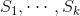

19.2 模型
对于我们来说，每一个输入都是 d 维空间中的一个向量（跟以前一样，我们还是使用数字列表来表示向量）。我们的目标是识别由类似的输入所组成的聚类，（有时）还要找出每个聚类的代表值。
例如，每个输入可以是博客文章的标题（我们可以设法用数字向量来表示它），那么在这种情况下，我们的目标可能是对相似的文章进行聚类，也可能是了解用户都在写什么博客内容。或者，假设我们有一张包含数千种（红、绿、蓝）颜色的图片，但是我们需要一个 10 色版本来进行丝网印刷。这时，聚类分析不仅可以帮助我们选出 10 种颜色，并且还能将“色差”控制在最小的范围之内。
k -均值算法 （k -means）是一种最简单的聚类分析方法，它通常需要首先选出聚类 k 的数目，然后把输入划分为集合  ，并使得每个数据到其所在聚类的均值（中心对象）的距离的平方之和最小化。由于将 n 个点分配到 k 个聚类的方法非常多，所以寻找一个最优聚类方法是一件非常困难的事情。一般情况下，为了找到一个好的聚类方法，我们可以借助于迭代算法。
1. 首先从 d 维空间中选出选择 k 个数据点作为初始聚类的均值（即中心）。
2. 计算每个数据点到这些聚类的均值（即聚类中心）的距离，然后把各个数据点分配给离它最近的那个聚类。
3. 如果所有数据点都不再被重新分配，那么就停止并保持现有聚类。
4. 如果仍有数据点被重新分配，则重新计算均值，并返回到第 2 步。
利用第 4 章中学过的 vector_mean 函数，可以轻松创建如下所示的类来完成上述工作：
class KMeans:
"""performs k-means clustering"""
def __init__(self, k):
self.k = k # 聚类的数目
self.means = None # 聚类的均值
def classify(self, input):
"""return the index of the cluster closest to the input"""
return min(range(self.k),
key=lambda i: squared_distance(input, self.means[i]))
def train(self, inputs):
# 选择k个随机点作为初始的均值
self.means = random.sample(inputs, self.k)
assignments = None
while True:
# 查找新分配
new_assignments = map(self.classify, inputs)
# 如果所有数据点都不再被重新分配，那么就停止
if assignments == new_assignments:
return
# 否则就重新分配
assignments = new_assignments
# 并基于新的分配计算新的均值
for i in range(self.k):
# 查找分配给聚类i的所有的点
i_points = [p for p, a in zip(inputs, assignments) if a == i]
# 确保i_points不是空的，因此除数不会是0
if i_points:
self.means[i] = vector_mean(i_points)
下面让我们来看看其中的原理。